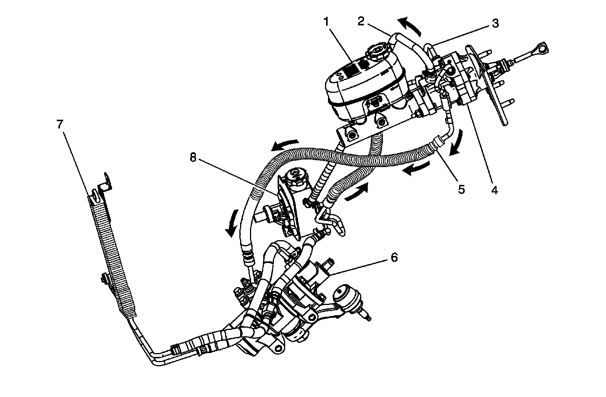

Brake Assist System Description and Operation (Hydraulic Assist)
Brake Assist System Description and Operation (Hydraulic Assist)

1 - Master Cylinder
2 - Power Brake Booster Outlet Hose
3 - Power Brake Booster Inlet Pipe/Hose
4 - Hydraulic Brake Booster
5 - Power Steering Gear Inlet Pipe/Hose
6 - Steering Gear
7 - Power Steering Cooler
8 - Power Steering Pump
System Component Description
The brake assist system consists of the following:
Brake Pedal
Receives, multiplies and transfers brake system input force from driver.
Brake Pedal Pushrod
Transfers multiplied input force received from brake pedal to brake booster.
Hydraulic Brake Booster
Uses power steering fluid pressure to decrease effort required by driver when applying brake system input force.
Power Steering System
Supplies pressurized power steering fluid used by hydraulic brake booster to decrease brake pedal effort.
System Operation
The hydraulic brake boost system uses fluid from the power steering pump (8) through the hydraulic boost inlet hose (3) and to the brake booster assembly (4). In addition to supplying the brake system with fluid for increased apply, the power steering pump is also connected to the power steering gear (6) and cooler (7).
The steering pump (8) is a continuous flow device supplying approximately 3 GPM at 1000 RPM, at the pump shaft. The fluid flows through the booster spool valve, then the return hose (5), and then to the steering gear (6). Pressure is produced by applying the brake pedal, resulting in the spool valve being actuated, internal to the hydraulic brake booster. The spool valve produces a marginal restriction that causes pressure in the booster (4) to rise and forces the power piston and therefore the output rod forward to generate force and motion at the master cylinder (1). The brake corners are actuated by the fluid impulse generated by the master cylinder (1). Internal blow by, or pressure relief, is directed to the low pressure return hose (2) back to the power steering pump (8).